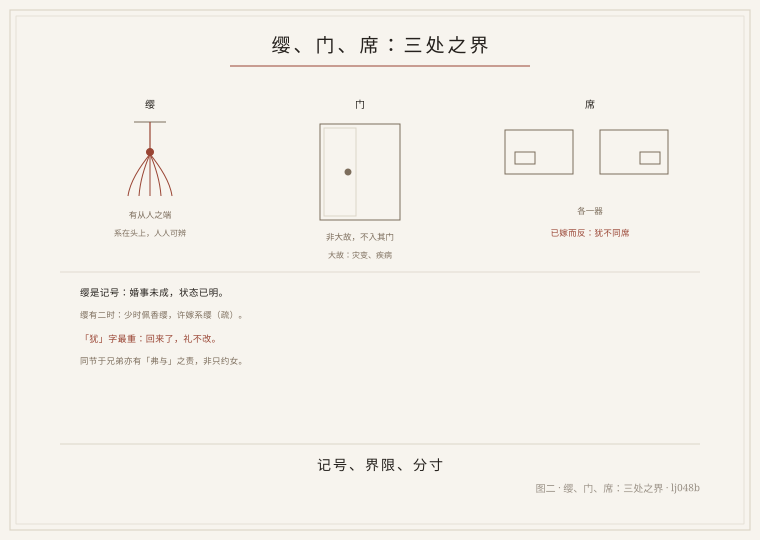

曲礼上 · 一·五十 · 第 48 课
女子许嫁，系上缨——缨是「有所属」的记号。许了嫁就有宫门，列为成人；不是大故，别人不进她的门。已嫁的女子回娘家，兄弟不同席而坐、不同器而食。
说什么事：女子许嫁，缨，非有大故，不入其门。姑、姊妹、女子子已嫁而反，兄弟弗与同席而坐，弗与同器而食。
落在哪一层：教。上节讲言语的门限，此节讲婚姻的门限。
为何编在此位：一·四十九讲「不出梱」，此节讲「入门」与「归宁」的分寸；一出一入，正是同一道门。
【经】女子許嫁，纓，非有大故，不入其門。姑、姊、妹、女子子已嫁而反，兄弟弗與同席而坐，弗與同器而食。
许嫁，缨 郑注：「女子许嫁系缨，有从人之端也。」疏：「妇人质弱，不能自固，必有系属，故恒系缨。缨有二时：一是少时常佩香缨，二是许嫁时系缨，此则为许嫁时系缨。」又引《士昏礼》：「主人入，亲说妇缨。」郑注：「妇人十五许嫁，笄而礼之，因著缨，明有系也。盖以五采为之，其制未闻。」
非有大故，不入其门 郑注：「大故，宫中有灾变，若疾病，乃后入也。」疏：「女子已许嫁，则有宫门，列为成人。唯有丧病等，乃可入其门，非大故，则不入门也。」
女子子 疏：「谓已嫁女子子，是己之女。」——「女子子」，女之所生之女，即已嫁之女。
已嫁而反 反，归宁。疏：「女子十年而不出嫁，及成人可以出矣，犹不与男子共席而坐，亦远别也。」
弗与同席而坐，弗与同器而食 郑注：「皆为重别，防淫乱。」
女子许嫁，系上缨。不是大故，别人不进她的门。姑母、姊妹、已嫁的女儿回娘家，兄弟不与她同席而坐，不与她同器而食。
一节三层：缨是记号，门是界限，归宁是分寸。记号说「她有所属」，界限说「外人止步」，分寸说「回了娘家，仍是已嫁之人」。
第一层 缨：一个可见的系 注只说「有从人之端」，疏补「妇人质弱，不能自固，必有系属」。缨是看得见的系，系在头上，人人可辨。礼用一件小物，把一桩尚未成的婚事，变成众人可见的状态。
第二层 缨有二时 疏辨得细：少时佩香缨，许嫁系缨。同名为缨，一为饰，一为记。此节所系，是许嫁之缨。
第三层 非大故不入其门 注把「大故」限在「宫中有灾变，若疾病」。所以此门不是永闭：丧病之时，门可以开。平日不入，是大故之外一律不入。
第四层 已嫁而反：最重的一层 已经归宁回家，兄弟仍不同席、不同器。疏说「犹不与男子共席而坐，亦远别也」——「犹」字最重：回来了，礼不改。别不是防外人，是防「回来了就当没嫁」的那种松懈。
与今日何干 今日无缨，也无宫门，但有两件事仍可通：一，订婚这类事有可见的记号，人不必猜；二，久别重逢的亲人之间，仍有一层「不是从前」的分寸。
| 左 | 右 |
|---|---|
| 女子许嫁，缨 | 有从人之端也；明有系也 |
| 缨有二时 | 少时佩香缨；许嫁系缨 |
| 非有大故，不入其门 | 大故谓灾变、疾病 |
| 许嫁则有宫门，列为成人 | 唯丧病乃可入 |
| 已嫁而反，不同席、不同器 | 犹不与男子共席，亦远别也 |
| 皆为重别 | 防淫乱 |
画一道院门与院内一段空阶：门内阶上铺着一张空席，席边一只食器单独摆着，另一只器在席外三尺；门上挂着一缕五色丝绳，垂在门环侧。院内无人，阶下有两只反向的鞋印，一进一出。不画人，不写文字。赭色只在门环与丝绳的两端。
